Обоснование
Существует широко распространенное мнение, что большие собаки более добрые, чем маленькие собаки. Стереотипы о собаках могут негативно влиять на отношение к ним в обществе, а также влиять на отдельные случаи взаимодействия человека с собакой
Входные данные
В данном исследовании рассматривались 97 различных пород собак
- Название породы
- Минимальная продолжительности жизни, года
- Максимальная продолжительности жизни, года
- Минимальная высота самцов, дюймы
- Максимальная высота самцов, дюймы
- Минимальная высота самок, дюймы
- Максимальная высота самок, дюймы
- Минимальный вес самцов, фунты
- Максимальный вес самцов, фунты
- Минимальный вес самок, фунты
- Максимальный вес самок, фунты
- Другие характеристики, условные единицы
| Name | min_life_expectancy | max_life_expectancy | max_height_male | max_height_female | max_weight_male | max_weight_female | min_height_male | min_height_female | min_weight_male | min_weight_female | good_with_children | good_with_other_dogs | shedding | grooming | drooling | coat_length | good_with_strangers | playfulness | protectiveness | trainability | energy | barking |
|---|
Рассмотрим вариации роста и веса собак в зависимости от пола и породы
Детальные вариации роста и веса собак в зависимости от пола и породы
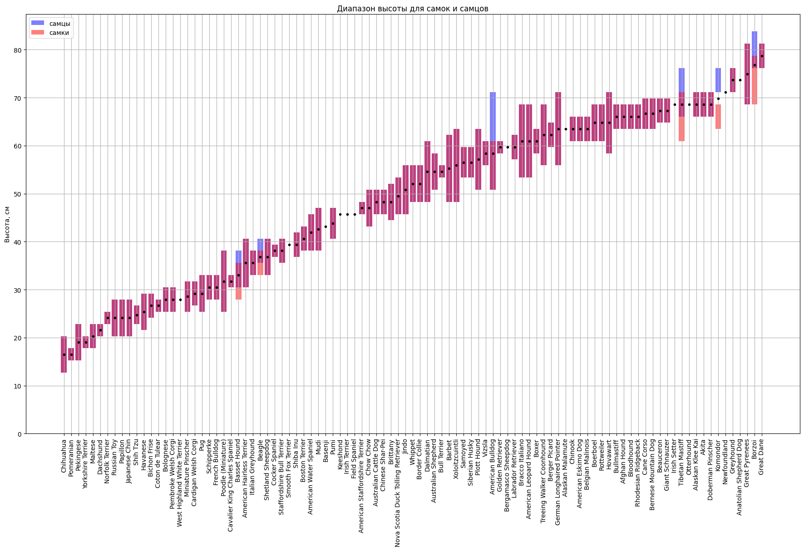
Средний показатель роста: 49 см
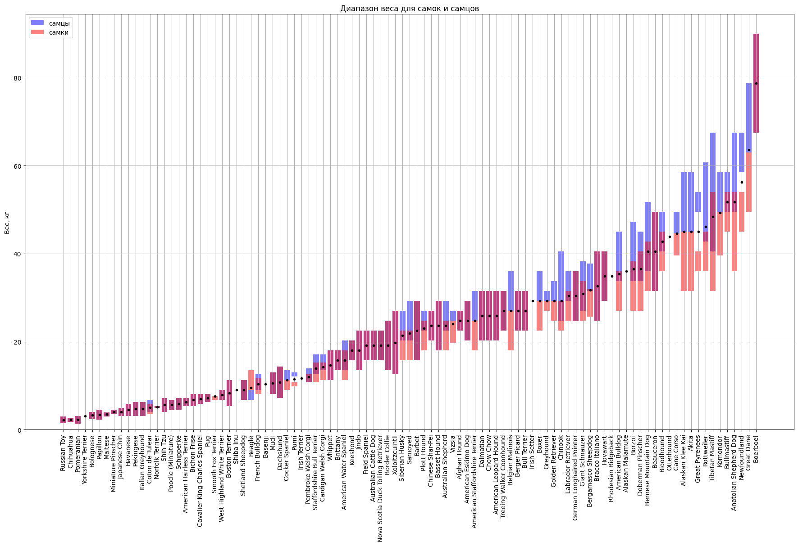
Средний показатель веса: 22.6 кг
Детальные вариации возраста собак в зависимости от породы
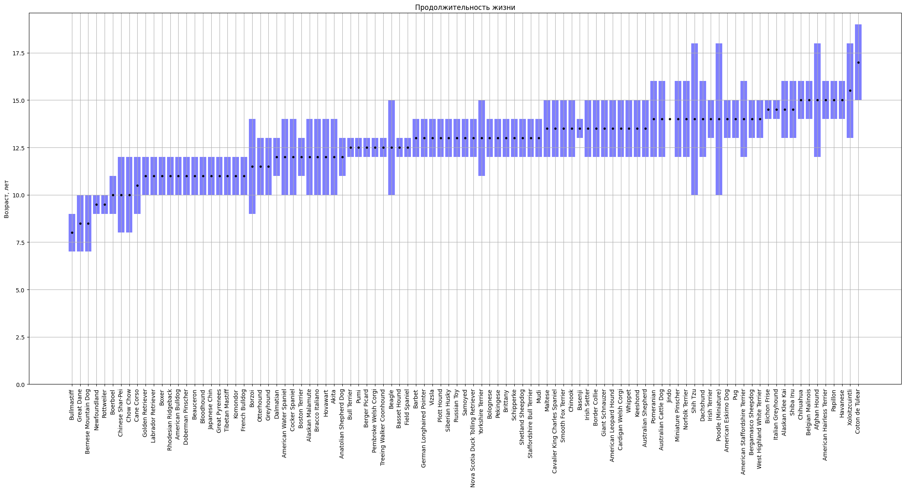
Средний показатель продолжительности жизни: 12.7 лет
***Гипотезы будут поверены с помощью теста Шапира-Уилка и теста Спиримана
Тест Спирмана является непараметрическим методом, то есть он не требует нормального распределения данных. Он может быть использован для анализа связи между любыми двумя переменными, даже если они не являются нормально распределенными.
Тест Шапиро-Уилка - это статистический тест, который используется для проверки нормальности распределения данных. Он основан на сравнении наблюдаемых данных с ожидаемым нормальным распределением.
Гипотезы, которые проверяются с помощью теста Шапиро-Уилка, следующие: - Нулевая гипотеза (H0): данные имеют нормальное распределение. - Альтернативная гипотеза (H1): данные не имеют нормальное распределение.
Проверим - крупные собаки правда добрее, чем маленькие?
Гипотеза №1: Существует взаимосвязь между размером собаки и её добротой
Нулевая гипотеза: Собаки крупных пород более добрые, чем собаки мелких пород.
Альтернативная гипотеза: Собаки мелких пород более добрые, чем собаки крупных пород.
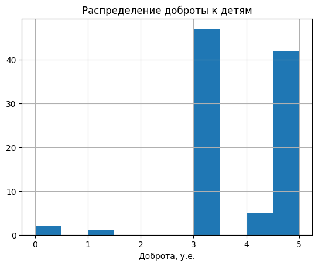 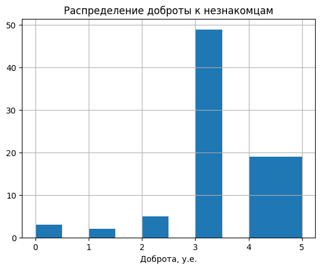 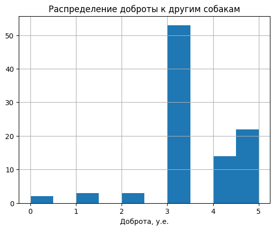 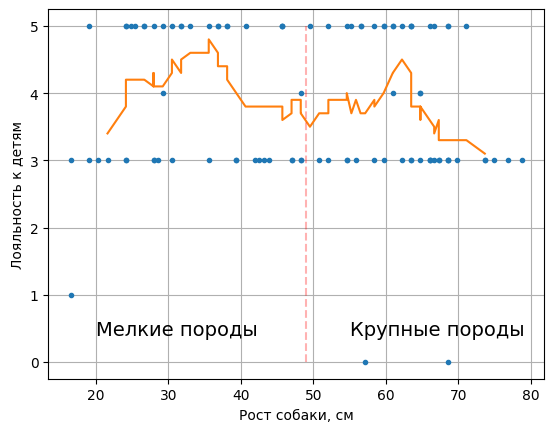 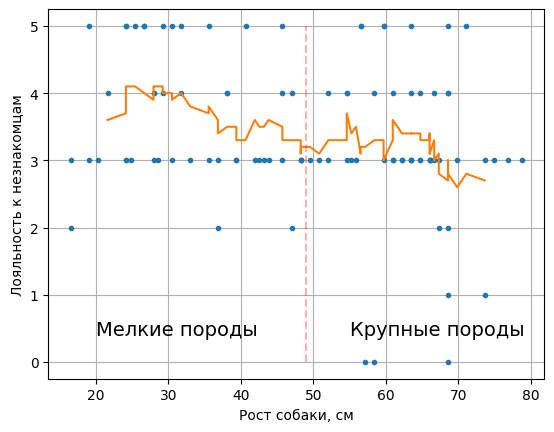 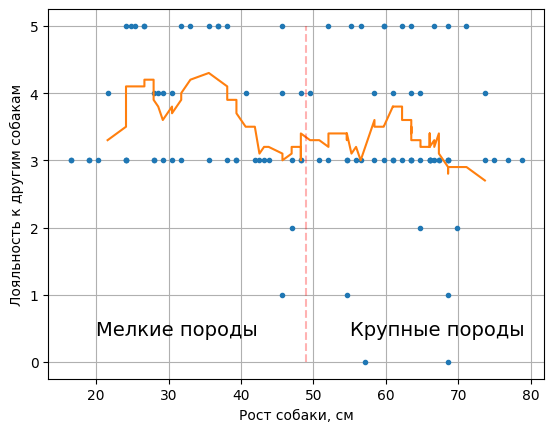Выводы: Из результатов тестов Шипира-Уилка можно сказать, что собаки относятся к детям более лояльно, чем к незнакомцам и другим собакам. По графикам теста Спиримана можно сделать вывод, что зависимость между размером и лояльностью к детям отсутствует, а также что зависимость между размером и лояльностью к незнакомцам, другим собакам слабо выраженная. Гипотеза опровергнута.
Гипотеза №2: Величина доброты собаки к детям, незнакомцам и другим собакам коррелируют друг с другом
Нулевая гипотеза: Собаки добрые к кому-то одному, добры к кому-то ещё.
Альтернативная гипотеза: Собаки добрые к кому-то одному, недобры к другим.
 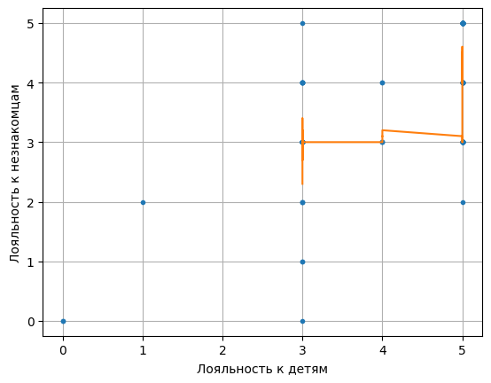
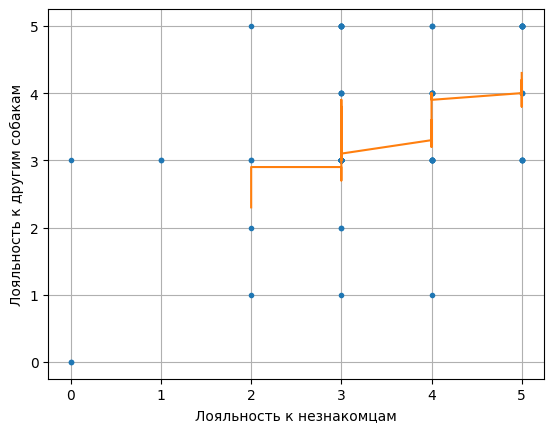
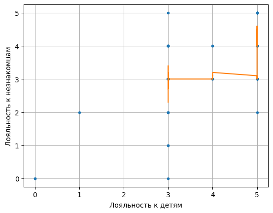
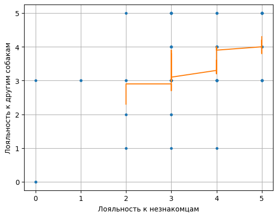
Выводы: Как видно из теста Спиримана доброта к детям, незнакомцам и другим собакам имеет выраженную корреляцию с друг другом. Гипотеза подтвердилась.
Выводы: В ходе данной работы мы пользовались статистическими методами для проверки гипотез - одна из них оказалась неверной, другая - верной. Тщательный анализ данных позволил выявить зависимости, которые изначально не были очевидны.
Анализ
Интересности
- Всего 16 пород с максимальным значением энергичности (energy) - одни из них Irish Setter, Border Collie, Mudi
- Всего 13 пород с максимальным лаем (barking) - из них Chihuahua, Otterhound
- Всего 17 пород с максимальным значением игривости (playfulness) - из них French Bulldog, Mudi, Irish Setter
- Наименее поддающиеся дрессировке - Plott Hound и Afghan Hound
Найдем матрицу корреляции базы данных и построим ее тепловую диаграмму.
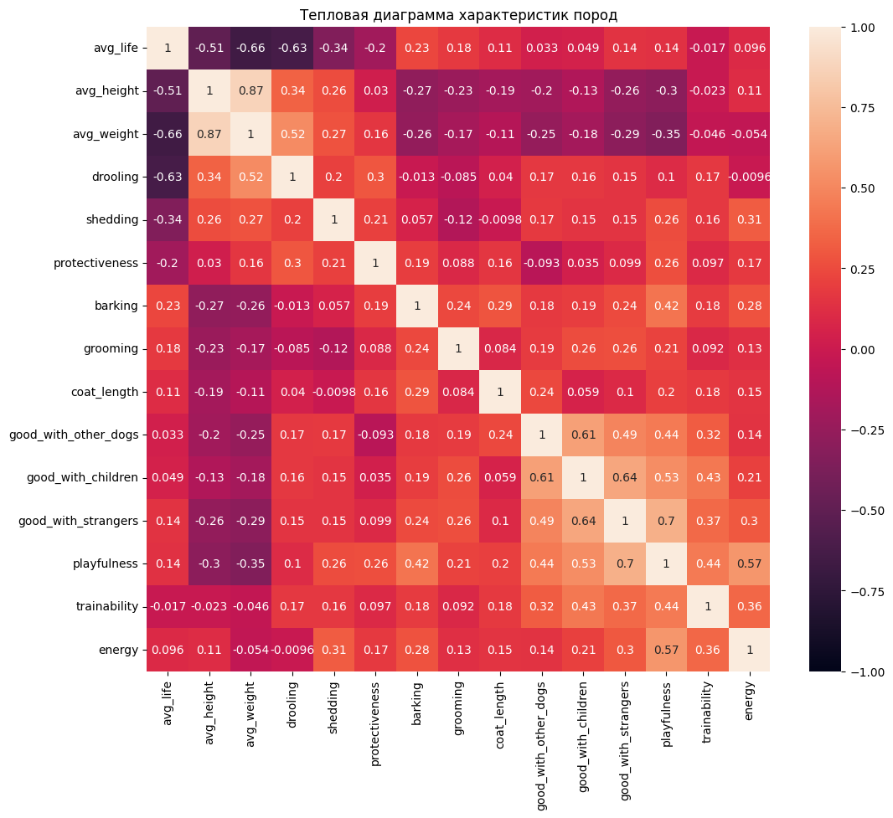
Выводы:
- вес пропорционален росту
- продолжительность жизни падает с увеличением габаритов
- слюнеобильность (drooling) пропорциональна весу
- доброта к другим собакам, детям и незнакомцам, а также игривость, хорошо скореллированы друг с другом
- добрые породы немного легче поддаются дрессировке
- нередко крупные породы более добрые и игривые, чем мелкие
- большая игривость может означать много лая (barking) и энергичность (energy)
- частота и объем линьки (shedding) пропорционален габаритам и энергичности
- крупные породы лают меньше
Покажем характер некоторых зависимостей:
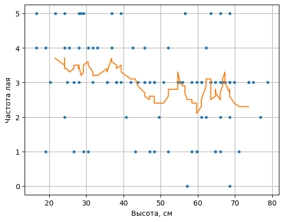 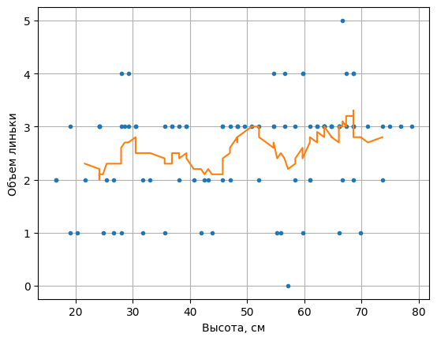Выводы: В ходе данной работы мы пользовались статистическими методами для проверки гипотез - одна из них оказалась неверной, другая - верной. Тщательный анализ данных позволил выявить зависимости, которые изначально не были очевидны.